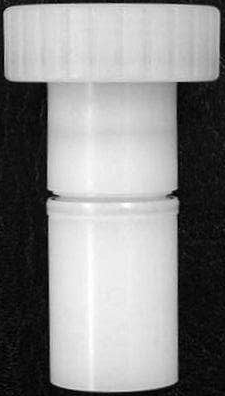
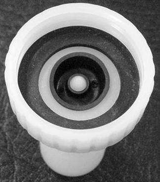
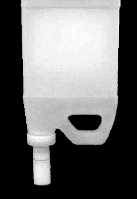
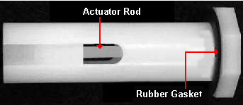
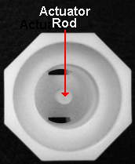
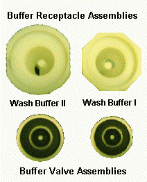
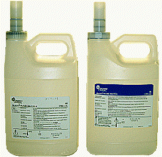
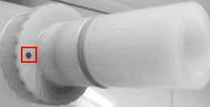

Wash Buffer Valve and Receptacle Assemblies
Purpose
This document describes the wash buffer valve and valve receptacle.
Wash Buffer Valve
The buffer valve assembly is the cap for the buffer bottle. When attached to the reservoir, the actuator rod inside the receptacle on the buffer reservoir pushes the valve open and allows the buffer to flow out of the bottle.
- Replace the cap-valve assembly, if buffer runs out while inverting the bottle for placement on the reservoir.
- Replace the buffer gasket-bottle, if buffer is overflowing the reservoir.



Reservoir Receptacle
The reservoir valve receptacle fits into the buffer reservoir. The receptacle drops into the reservoir and requires a rotation of 1/4 turn clockwise to secure it in position.
The actuator rod in the receptacle pushes up on the rubber valve seal inside the bottle cap and allows buffer to flow out of the bottle. Vacuum built up in the bottle soon stops the flow so that the buffer reservoir does not overflow. When the buffer reservoir fluid level drops sufficiently, an air bubble is drawn into the buffer bottle relieving the vacuum and allowing more buffer to flow out.
The receptacle gasket aids retention, but is not a seal. If the buffer reservoir overflows, then there is air leaking into the buffer bottle. Check for a loose bottle cap-valve assembly, a worn cap-valve gasket, or foil left on the lip of the bottle allowing an air leak.


Wash Buffer II Hardware Changes (2006 to 2008)
- WBII bottle label has a blue stripe making it noticeably different from the WB bottle.
- Mouth of the WBII bottle is larger to prevent the operator from switching between buffers.
- WBII wash buffer valve has a larger cap to accommodate the WBII bottle. The WBII wash buffer valve does not fit the WB bottle and the WB bottle does not fit into the WBII valve.
- WBII reservoir receptacles are noticeably different in size and shape from the WB reservoir receptacles.


Valve Change (2000)
- Active customers with instruments serial number 401000 or lower were sent the newest version of the wash buffer valve at no charge.
- All valves built after June 2000 have the new thread dimensions and an identifying black dot.

| Revision | Part Number | Black Dot? | Wash Buffer Valve Revision | Replacement Required |
|---|---|---|---|---|
| 1 | 6315A | No | Original version supplied with instruments 401000 and lower. | Yes |
| 2 | 6315A | No (Original style, newer version) | Version supplied with instruments 401001 through approximately 403800 (with Unibase fluids tray). | No |
| 3 | 6315B | Yes | Dot marked version used October 1999. | No |